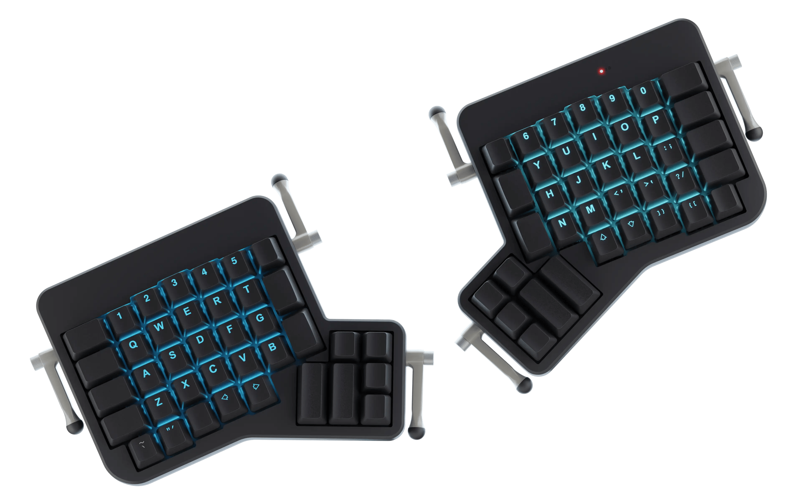
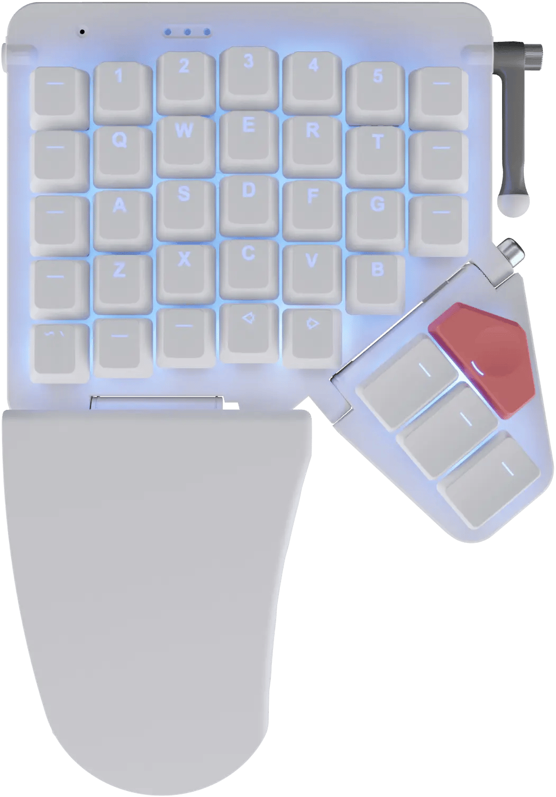
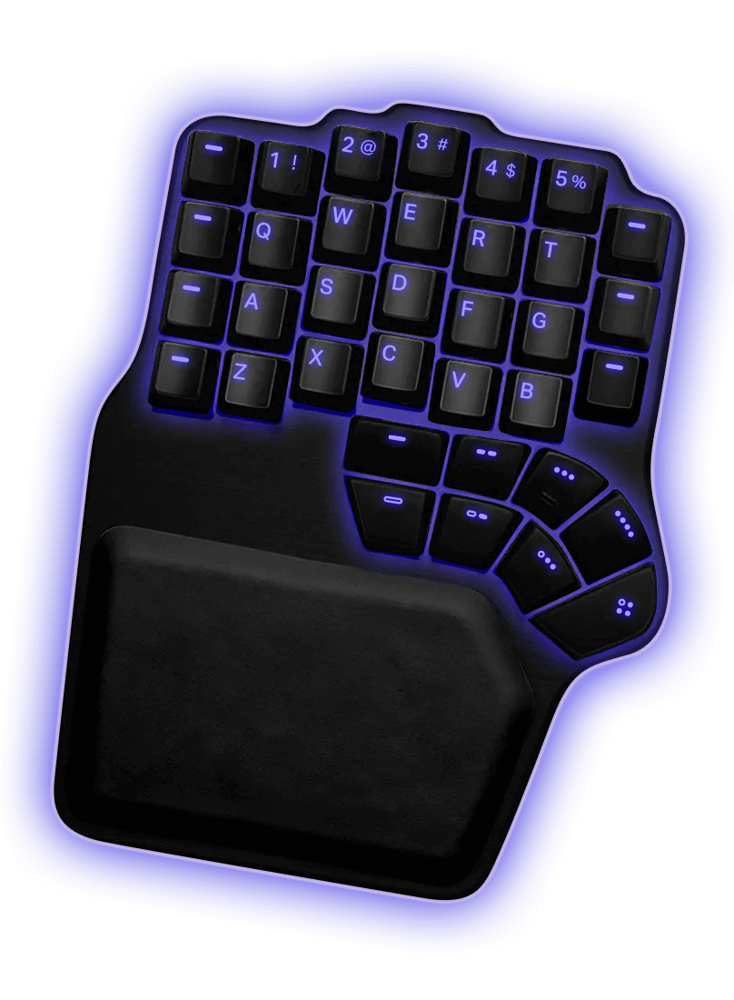
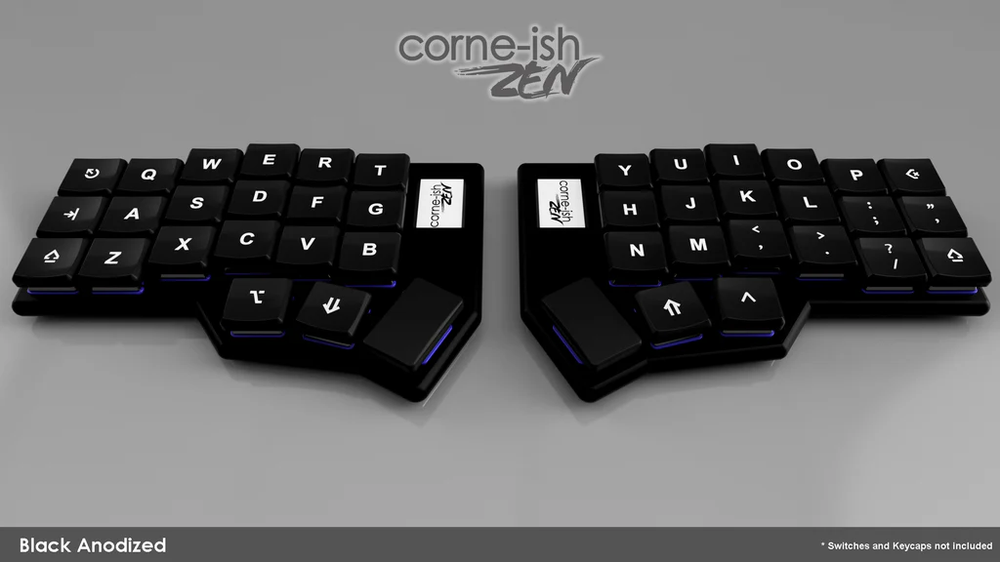
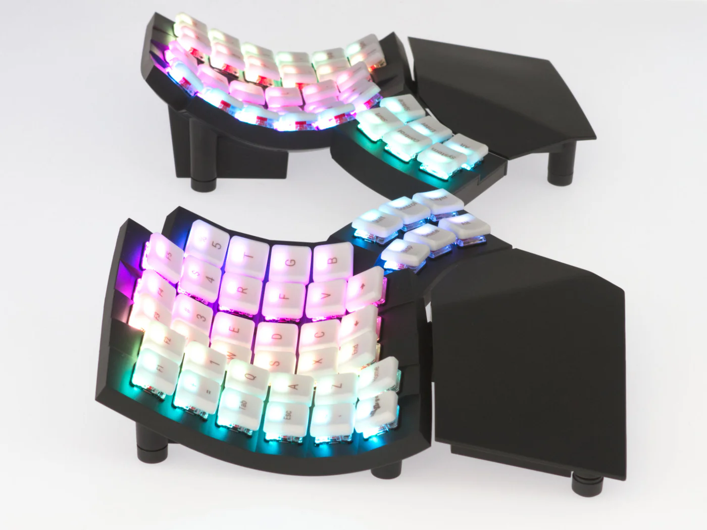
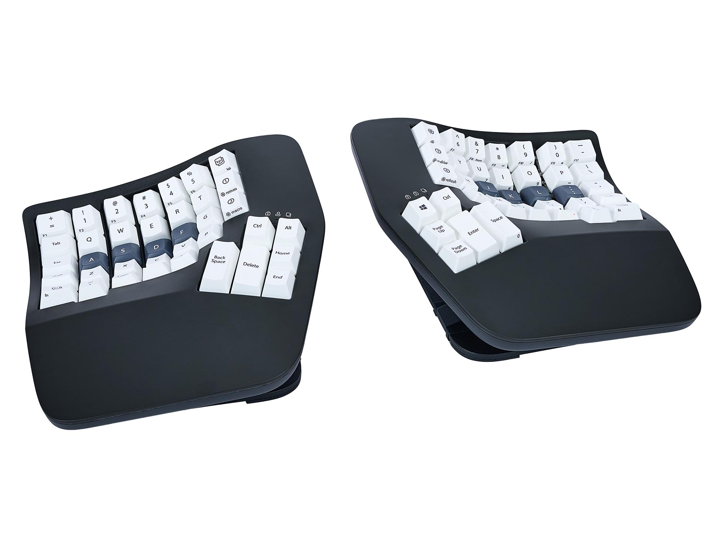
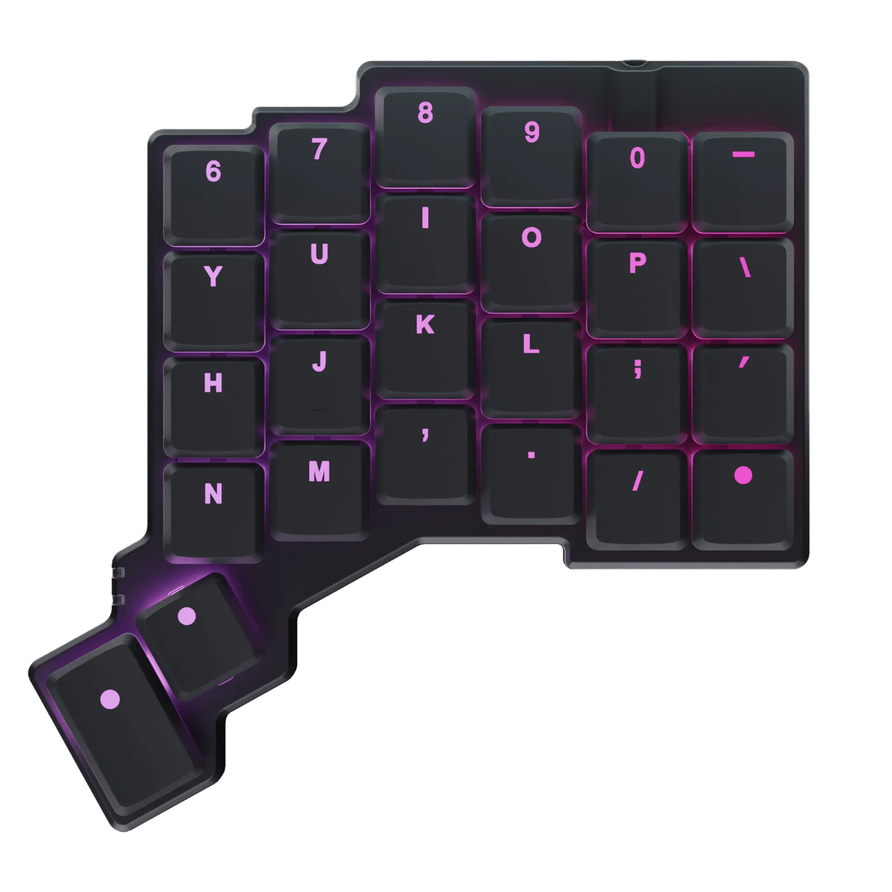
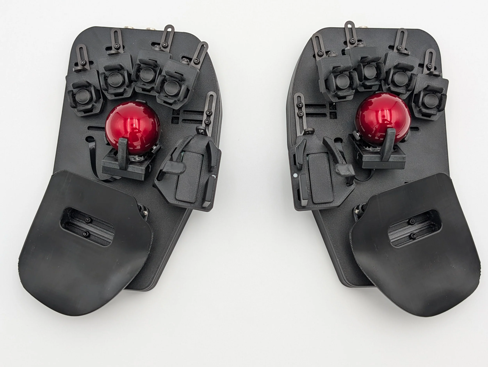

Ergodox
Manufacturer ZSA
Connectivity Wired
Switches MX
Keys 76
Taken from an Open Source design, the ZSA Ergodox is a premium example of the project. The latest version enjoys full per key RGB, hotswap sockets and a 2 year warranty.
Moonlander
Manufacturer ZSA
Connectivity Wired
Switches MX
Keys 72
The successor to the Ergodox, the Moonlander enjoys a unique thumb cluster and wonderfully slim chassis. It even has a little peizo speaker that chirps when in powers on. Best of all, foldaway and detachable palm rests.
Defy
Manufacturer Dygma
Connectivity Wired/BT/2.4GHz
Switches MX
Keys 70
Launched with a Kickstarter project, the Defy is now available to buy 'off the shelf'. An incredibly well-featured board with underglow, as well as per key RGB lighting and optional built-in tenting. Wired and Wireless connection is also possible.
Corne
Manufacturer Various
Connectivity Wired/Wireless
Switches MX/Choc
Keys 36/42/46
As a hugely popular open source design, the Corne has been manufactured in every conceivable way with choc and MX switch variants. Typically found as 36 key, 5 column, or 42 key, 6 column variants, the latest iteration of the Corne also provides two extra keys per side.
Glove80
Manufacturer MoErgo
Connectivity Wired/Wireless
Switches Choc
Keys 80
A lightweight keyboard with concave keywell and 80 switches to cover function keys as well as a full range of numbers. Powered by ZMK wireless firmware there is near limitless ability to customize and bend the Glove80 to your needs. It also supports flexible mounting.
Advantage360
Manufacturer Kinesis
Connectivity Wired/Wireless
Switches MX
Keys 76
Built like a tank, what the Advantage360 lacks in portability it makes up for in robustness with built in 3-stage tenting. Incredible build quality but the thumb clusters are divisive. Available wired or wireless, the wireless enjoying the incredibly flexible ZMK firmware.
Voyager
Manufacturer ZSA
Connectivity Wired
Switches Choc
Keys 52
Yes, another ZSA board. This one is wired too, and has far fewer keys, at just 52. Build quality is the usual top notch affair from ZSA and for the most part this is a board that hits the sweet spot with most users able to enjoy the portability, and get by with less keys than a conventional board.
Svalboard Lightly
Manufacturer Svalboard
Connectivity Wired
Switches Magnetic
Keys NA
Unlike anything else you will have used, arguably better described as an 'input device' than a keyboard, the Svalboard lightly is an evolution of the Datahand, itself an entirely unique design. Magnetic switches, and an entirely bespoke fit means while it won't be for everyone, for some it can be a career saver.